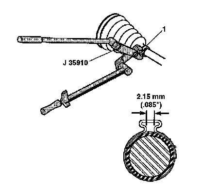

Wheel Drive Shaft Outer Joint and Seal Replacement
Wheel Drive Shaft Outer Joint and Seal Replacement
Tools Required
^ J 8059 Snap Ring Pliers
^ J 35910 Drive Axle Seal Clamp Pliers
^ J 36652-1 Drive Axle Clamp Swage Tool
^ J 36652-2 Axle Swage Tool
Removal Procedure
1. Remove the wheel drive shaft.
Important: Use caution when using the hand grinder by the CV joint outer race (1).
2. Use a hand grinder to cut through the swage ring (2).
3. Use side cutters to cut off the small boot clamp (4).
4. Slide the boot (5) down the halfshaft bar (4) and away from the CV joint outer race (1).
5. Wipe all grease away from the face of the CV joint.
6. Find the halfshaft bar retaining snap ring (3), which is located in the inner race (2).
7. Spread the snap ring ears apart using J 8059 (or equivalent).
8. Pull the CV joint (1) and the CV joint boot (5) from the halfshaft bar (4).
9. Discard the old CV joint boot (5).
10. Place a brass drift against the CV joint cage (1).
11. Tap gently on the brass drift with a hammer in order to tilt the cage (1).
12. Remove the first chrome alloy ball (2) when the CV joint cage (1) tilts.
13. Tilt the CV joint cage (1) in the opposite direction to remove the opposing chrome alloy ball (2).
14. Repeat this process to remove all six of the balls.
15. Pivot the CV joint cage (4) and the inner race 90 degrees to the center line of the outer race (1). At the same time, align the cage windows (3) with the lands of the outer race (2).
16. Lift out the cage (4) and the inner race.
17. Remove the inner race (1) from the cage (2) by rotating the inner race (1) upward.
18. Clean the following items thoroughly with cleaning solvent. Remove all traces of old grease and any contaminates.
1. The inner and outer race assemblies
2. The CV joint cage
3. The chrome alloy balls
19. Dry all the parts.
20. Check the CV joint assembly for unusual wear, cracks, or other damage.
21. Replace any damaged parts.
22. Clean the halfshaft bar. Use a wire brush to remove any rust in the seal mounting area (grooves).
Installation Procedure

1. Inspect all of the parts for unusual wear, cracks, or other damage. Replace the CV joint assembly if necessary.
2. Put a light coat of the recommended grease on the inner (6) and the outer race (8) grooves.
3. Hold the inner race (1) at 90 degrees to the centerline of the cage (2).
4. Align the lands of the inner race (1) with the windows of the cage (2).
5. Insert the inner race (1) into the cage (2), by rotating the inner race (1) downward.
6. Insert the cage (4) and inner race into the outer race (1).
7. Place a brass drift against the CV joint cage (1).
8. Tap gently on the brass drift with a hammer in order to tilt the cage (1).
9. Install the first chrome alloy ball (2) when the CV joint cage (1) tilts.
10. Tilt the CV joint cage (1) in the opposite direction to install the opposing chrome alloy ball (2).
11. Repeat this process in order to install all six of the balls.

12. Pack the CV joint boot (1) and the CV joint assembly with the grease supplied in the kit. The amount of grease supplied in this kit has been pre-measured for this application.
13. Place the new small boot clamp (2) onto the CV joint seal (1).
14. Slide the CV joint boot (1) onto the halfshaft bar.
15. Position the small end of the CV joint boot (1) into the joint boot groove (3) on the halfshaft bar.

16. Secure the small boot clamp (1) using J 35910 (or equivalent), a breaker bar, and a torque wrench.
Tighten the small clamp (1) to 136 N.m (100 lb ft).
17. Check the gap dimension on the clamp ear. Continue tightening until the gap dimension is reached.

18. Pinch the new swage ring (2) slightly by hand to distort it into an oval shape.
19. Slide the distorted swage ring (2) over the large diameter of the boot (1).
Important: Be sure that the retaining ring side of the CV joint inner race faces the halfshaft bar (3) before installation.
20. Slide the CV joint (4) onto the halfshaft bar (3). The retaining snap ring inside of the inner race engages in the halfshaft bar groove with a click when the CV joint (4) is in the proper position.
21. Pull on the CV joint (4) to verify engagement.
22. Slide the large diameter of the CV joint boot (1), with the large swage ring (2) in place, over the outside edge of the CV joint outer race (4).
23. Clamp the CV joint boot (2) tightly to the CV joint outer race (1) with the large swage ring (4), using the following procedure:
24. For the 1500 models, assemble the bolts and the support plate to the base of the J 36652-1 and secure the base in a vise. For the 2500, 3500, and Hummer H2 models, use the J 36652-2.
25. Position the CV joint end (outboard end) of the halfshaft assembly in the bottom half of J 36652-1 or J 36652-2.

26. Align the following during this procedure:
^ The CV joint boot (3)
^ The CV joint assembly (1)
^ The swage ring (2)
27. Install the top half of J 36652-1 or J 36652-2 onto the lower half of the tool, over the CV joint boot (3) and the CV joint assembly (1).
28. Align the swage ring (2) and the swage ring clamp.
29. Insert the bolts into J 36652-1 or J 36652-2. Hand tighten the bolts until the bolts are snug.
Tighten each bolt 180 degrees at a time. Alternate between the bolts until both sides of the top half of the tool touch the bottom half of the tool.
30. Loosen the bolts and remove the halfshaft assembly from the tool.
31. Install the wheel drive shaft.